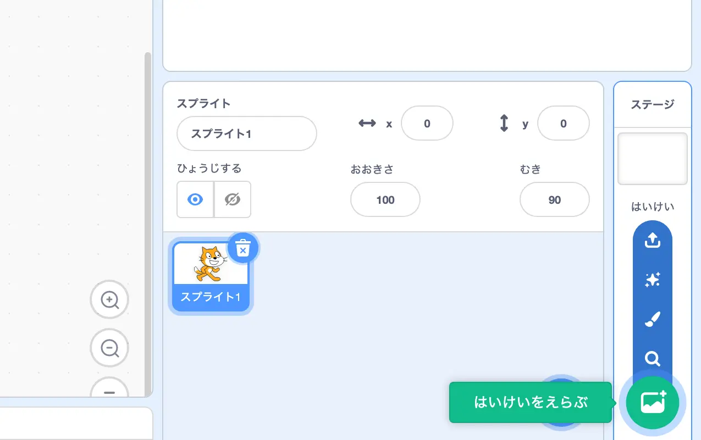

Scratchで迷路ゲームを作ろう！
もくじ
今回つくるもの
ゲームのつくりかた

画面上部の”つくる”ボタンを押して
この画面が出てきたら成功！
迷路をつくろう

右下の”はいけいをえらぶ”から

“Blue Sky 2”を選ぼう

画面がこうなったら準備OK！

①ステージを選択して
②左上の”背景”ボタンをクリック
この画面が出てきたら成功！

今開いた画面で、
①左のマーク群から消しゴムマークを選択し、
②太さを”１００”に変更しよう
これで迷路をつくる準備は完了！

↑みたいに好きな迷路を描いてみよう！
迷路ができたら次はキャラクターの操作を制作しよう
キャラクターを動かそう
今回は、今画面に映っているこの猫を主人公としてゲームを作るよ！

まずは
①猫の大きさを30にして迷路の大きさに合わせよう
②猫をクリックした状態で動かしてスタート地点に置こう！
猫をスタート地点に置けたかな？
猫をスタート地点に置くことができたら、次は上の四つのブロックを
持ってこよう！
ブロックの探しかたがわからない時はゲームの作りかたを見てみよう！
４つのブロックを持って来ることができたらこのように組合せよう！

さっき組み合わせたブロックの中身を変更しよう！
"スペース"を"みぎむきやじるし"に、
x座標を１０ずつ変えるの"10"を"5"に変更しよう！
数字は半角英数じゃないと認識されないから注意してね！
今編集したブロックを右クリックして”ふくせい”機能を使って複製しよう！
同じブロック群が二つできたかな？
できたら次に進もう！
ふくせい機能を使って複製した方の中身を
"みぎむきやじるし"から"ひだりむきやじるし"に
xざひょうを５ずつかえる"5"を"-5(マイナス５)"に変えよう！
マイナス５も半角じゃないと認識されないから注意してね！
猫が左右に動くようになったかな？
旗マークを押すと元の位置に戻ってくるよ！
次は上下の動きを作ろう！

新しく２つのブロックを持ってこよう！
今回は"Y"ざひょうブロックだから注意してね！

"スペース"キーから"うわむきやじるし"キーに
yざひょうを10ずつかえるの"10"を"5"に変えよう！
今編集したブロックを”ふくせい”して、
"うわむきやじるし"を"したむきやじるし"に
yざひょうを5ずつかえるの"5"を"-5(マイナス5)"に変えよう！
上下にも動けるようになったかな？
動けるようになったら次に進もう！
壁を判定できるようにしよう！
今回は”色判定”を使って壁を作っていくよ！
水色の部分を全部壁として判定するために、
まずは上の２つのブロックをとってこよう！
２つのブロックを取ってきたら
①色にふれたブロックの色をクリック
②そして出てきたスポイトボタンをクリック
次は色を取得しに行くよ！

スポイトボタンをクリックしたら右のエディター画面の取得したい色
の部分にカーソルを移動！
そうすると色のデータを取って来ることができるよ！

色をとって来ることができたらこのように組み合わせよう！
組み合わせることができたら、４つになるように複製して、 それぞれをキーが押された時ブロックの下につけよう！

壁判定の作り方は、上の画像のように
進む力を”０”にすることで、壁を再現するよ！

上の画像で説明したように、組み合わせて０になるように
ブロックを入れていくよ！この場合は 5 - 5が０だから -5 を入れるよ！

さっきの要領で４つ全てに０になる組み合わせを入れてみよう！
これで壁判定を作ることができました！
ゴールを作ろう！

ゴールの目印を作っていくよ！
右下の”スプライトをえらぶ”を押してみよう！
今回は”Crystal（クリスタル）”を使用するよ！
見つけたらクリックしてみよう！

画面にクリスタルが出てきたら成功！

次はクリスタルをゴールの位置に設置するよ！
①クリスタルをゴールの位置に移動
②２つのブロックをこのように組み合わせよう！
順番がとても大事だから間違わないように気をつけよう！
次はゴールの文字を作っていくよ！
右下の”えがく”を押してみよう！

えがくの画面が出てきたかな？出てきたら、
①左のアイコンから筆のアイコンを選択
②色を好きな色に変更
③太さをちょうどいい太さにしよう！今回は５０にするよ

準備ができたらゴールの文字を書いてみよう！
上手に描けたかな？
文字が書けたら文字のスプライトのコードに移動して ３つのブロックを持ってこよう！

持って来ることが出来たらこのように組み合わせよう！

組み合わせることが出来たらxざひょう、yざひょうの 数値をどちらも"0"にしよう！ これで画面の中心に文字を持って来ることができるよ！

ここまで出来たら
①緑の旗マークを押してみよう！ゴールの文字が消えたかな？
②クリスタルをクリックしてクリスタルのコードに移動しよう
新しく上記の３つのブロックを用意しよう！

持って来ることが出来たらこのように組み合わせよう！

組み合わせることが出来たら
"マウスポインター"にふれたの部分を
"スプライト1"に変更しよう！
変更することが出来たらゴールの文字のコードに移動しよう！

ゴールの文字のコードに この３つのブロックを追加しよう！

３つのブロックをこのように組み合わせることが出来たら
実際にネコがクリスタルの文字に触れた時にゴールの文字が出てくるか
テストしてみよう！
これで今回のゲームは完成！
もっと工夫したい場合は、
①ネコやクリスタルのイラストを変更する
②制限時間をつける
などに挑戦してみよう！